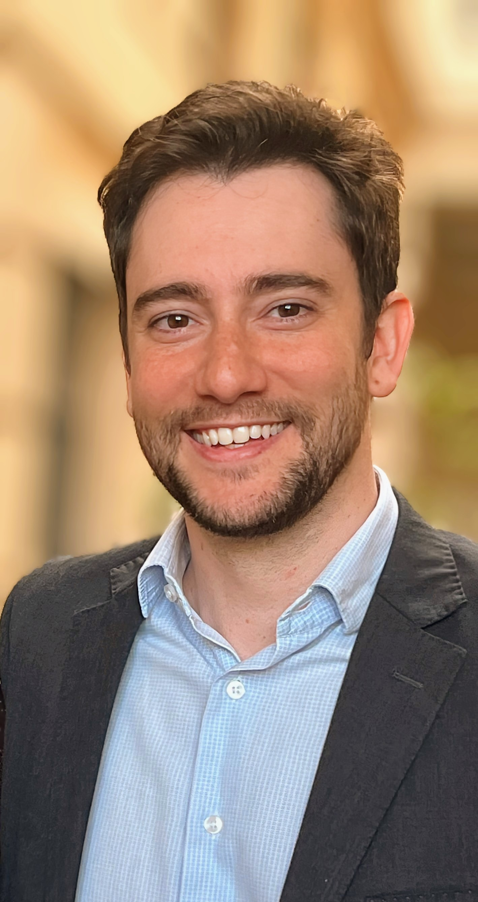

Dr. Rodrigo Valente
Médico pela Universidade Federal de Minas Gerais (CRM: 78504)
Cirurgião Geral pelo Hospital Mater Dei (RQE: 54649)
Urologista pelo Hospital Felício Rocho (RQE: 65863)
Membro Titular da Sociedade Brasileira de Urologia
Certificado em Cirurgia Robótica
Contato
📞 Telefone/WhatsApp: (31) 99793-9373
📧 E-mail: rodrigossvalente@gmail.com